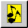

The Zine
Spring 1999 Movement Issue
-
 Your Publisher:
About The Diplomatic Pouch
Your Publisher:
About The Diplomatic Pouch -
Mostly this is just your basic "About" column. It starts with the now
tiresomely repetitive stock
apology that the issue is so danged late, and it then raves about the issue's contents.
Standard stuff, right? Well, there's a nice surprise stuck at the end; one
that will make your mouth water....
-
 Richard Adams:
We'll Inherit The Earth
Richard Adams:
We'll Inherit The Earth -
(Or at least we'll inherit one of its Great Powers.) Richard explores more
aspects of replacement player philosophy. What to do and why when you are
the new kid on the block.
-
Neil Barr:
Towards a Machiavelli Hall of Fame
-
Neil begins to do for Machiavelli what has been done for the standard game and
a number of other variants -- track some power and player statistics.
-
Greg Brown:
German Army to Silesia
-
You're Germany. Silesia is German territory. It's completely within your
national border. So why are you afraid to send an army there in Spring
of 1901? Greg tells you that you shouldn't be, and why.
-
Alex Churchill:
Cantabrigia
-
A lot of people play Diplomacy at college. Alex, at Cambridge,
took this one step further....
-
Tom Woodhouse:
Diplomatic Tactics
-
Believe it or not, this is not another article on Diplomacy tactics.
Instead, it's an article on diplomatic tactics. Geared specifically
for the new player, Tom offers sage advice to make those first steps
into the hobby as steady as possible.
-
Brandon Clarke:
Dip Down Under in 2002
-
For the first palindromically numbered calendar year in which a World
Diplomacy Convention will be
held, Brandon and his fellow dwellers in the southern hemisphere suggest that
the convention be held down under.
-
Mark B.:
E-Mail Diplomacy Without a GM
-
We all know you don't need a GM for a face-to-face game. But via e-mail,
you need either a lot of trust or a non-playing human or computerized
GameMaster who
collects the messages and processes the moves. Either that, or you need
Mark's system.
-
Emeric Miszti:
WDC IX in Pictures
-
Emeric provides us with a photographic look at the World Championships recently
held in Namur, Belgium. It is sad to see how hard the players have to try to
look like they're having fun even though I was not able to be there with them.
Poor fellows.
-
Tim Miller:
Grey, Broadcast Press
-
Tim Miller concludes his series on the various press settings, wrapping it
up with a discussion of grey press. Thanks for the excellent article series,
Tim. If that is your real name!
-
Tom Potocki:
Are You Man Enough?
-
Tactics don't win games; players do. So what does it take to be
the kind of player that wins games? Perhaps not surprisingly, the answer
can be found in the same text frequently consulted for tactical advice.
Tom advises you that improving your "manhood" will improve your game. Learn
how.
-

Jack Rudd:
ABBA Plays Diplomacy
-
It wasn't bad enough that The Pouch ruined perfectly good holiday carols,
was it? And it wasn't bad enough to rewrite Frank Sinatra's classic
recordings, was it? No, apparently not, because now ABBA songs are subjected
to "the treatment." Is there no limit to our audacity? (Of course not;
we're Diplomacy players.)
-
Matt Shields:
A PBEM Tournament Survey
-
Matt asks your help in answering ten quick questions to assist him in
determining how an e-mail Diplomacy tournament could be run. Give him a
hand and who knows? -- you might win a tournament you helped design!
-
Paul Windsor:
What's Your Point?
-
Answer this question about yourself and you find out more about
the kind of player you are. Answer it about your opponents to find out
what kind of players they are.
-
 The Editor and the Readership:
Pouch Deposits
The Editor and the Readership:
Pouch Deposits -
Hey, guess what! The Pouch got some mail and we're going to let you read it.
What a pleasant surprise, huh? What's that? Not a surprise? Oh well, at
least it's pleasant.
-
Chris Martin:
WDC Report From The Outgoing Champ
-
The 1998 World Champion traveled to Namur, Belgium to defend his title.
The fact that he's now the former champ should tell you how successful he
was in his mission (and after I put him through the rigors of the Hand
International Traning
System, too!). Ah well, he still had fun, and here's his report to prove it.

[ The Zine |
The DPjudge |
Online Resources |
Showcase |
Postal |
Email |
Face to Face |
Gear
]
The Diplomatic Pouch is brought to you by
the DP Council.
The Zine section is maintained by Manus Hand
(manus@diplom.org).